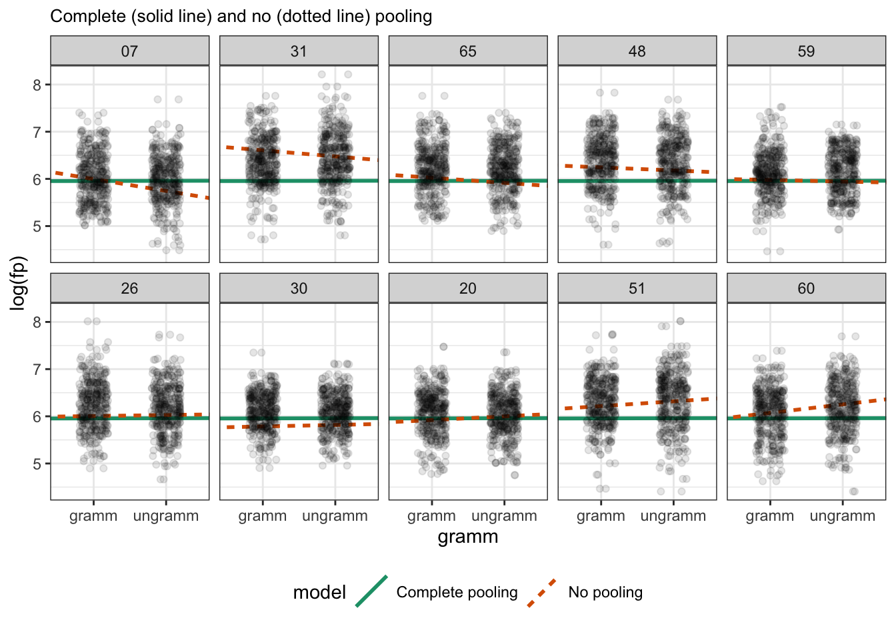
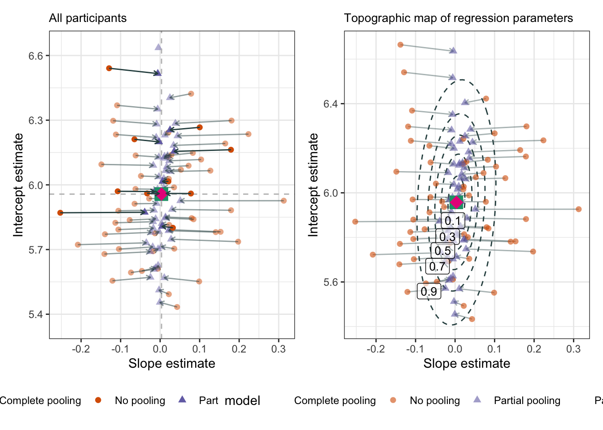

This chapter is not fully translated from bullet points (from my slides) to prose. This will happen eventually (hopefully by spring 2024).
This chapter presents figures from the blog post “Plotting partial pooling in mixed-effects models” from Tristin Mahr (2017). You can also read Section 15.9 'Shrinkage and Individual Differences’ in Winter (2019) and Box 8.2 'Broader Context: Shrinkage and Partial Pooling’ in Sonderegger (2023) for a short overview of the topics of shrinkage and partial pooling. We will be using the data from Biondo et al. (2022).
df_biondo <-read_csv(here("data", "Biondo.Soilemezidi.Mancini_dataset_ET.csv"),locale =locale(encoding ="Latin1") ## for special characters in Spanish ) |>clean_names() |>mutate(gramm =ifelse(gramm =="0", "ungramm", "gramm")) |>mutate_if(is.character,as_factor) |># all character variables as factorsdroplevels() |>filter(adv_type =="Deic")
complete pooling (green solid line) and no pooling (orange dotted line) of grammaticality effects for 10 participants
describe what you see in terms of intercept and slopes across the participants

Figure 12.1: Observations (black dots) with complete pooling regression line (solid green) and no pooling line (dotted orange) per 10 participants
12.4 Partial pooling: mixed models
13 Shrinkage
turns out the estimates are pulled towards the population-level estimates
all the information in the model is taken into account when fitting varying intercepts and slopes
Figure 13.1: Elaine Benes learns about shrinkage of random effect estimates towards the population-level estimates
13.1 Shrinkage
Figure 13.2: Shrinkage of 10 participants
13.2 Centre of gravity
why are some points not being pulled directly to the ‘centre of gravity’?
they’re being pulled to a higher confidence region

Figure 13.3: Shrinkage for all participants: each ellipsis represents a confidence level (really, a quantile: q1, q3, q5, q7, and q9); The inner ellipsis contains the centre 10% of the data, the outer ellipsis 90%
14 Why shrinkage?
with partial pooling, each random effect is liek a weighted average
it takes into account the effect for one group level (e.g., one participant) and the population-level estiamtes
the empirical effect for a group level is weighted by the number of observations
so if one participant has fewer observations than another, then more weight is given to the population-level estimates, and vice versa
the implications (benefits) of this:
imbalanced data are not a problem for linear mixed models
the model can make predictions for unseen levels, i.e., it can generalise to new data
Learning objectives 🏁
Today we learned…
what linear mixed models are ✅
how to fit a random-intercepts model ✅
how to inspect and interpret a mixed effects model ✅
Important terms
Term
Definition
Equation/Code
linear mixed (effects) model
NA
NA
References
Biondo, N., Soilemezidi, M., & Mancini, S. (2022). Yesterday is history, tomorrow is a mystery: An eye-tracking investigation of the processing of past and future time reference during sentence reading. Journal of Experimental Psychology: Learning, Memory, and Cognition, 48(7), 1001–1018. https://doi.org/10.1037/xlm0001053
Sonderegger, M. (2023). Regression Modeling for Linguistic Data.
Winter, B. (2019). Statistics for Linguists: An Introduction Using R. In Statistics for Linguists: An Introduction Using R. Routledge. https://doi.org/10.4324/9781315165547
Source Code
---title: "Shrinkage and Partial Pooling"subtitle: "Shrinkage of random Complete, No, Partial Pooling"author: "Daniela Palleschi"institute: Humboldt-Universität zu Berlin# footer: "Lecture 1.1 - R und RStudio"lang: endate: "01/12/2024"date-modified: last-modified---::: {.callout-warning}# Under construction {.unnumbered .uncounted .unlisted}This chapter is not fully translated from bullet points (from my slides) to prose. This will happen eventually (hopefully by spring 2024).:::This chapter presents figures from the [blog post](https://www.tjmahr.com/plotting-partial-pooling-in-mixed-effects-models/) "Plotting partial pooling in mixed-effects models" from Tristin Mahr (2017). You can also read Section 15.9 \'Shrinkage and Individual Differences' in @winter_statistics_2019 and Box 8.2 \'Broader Context: Shrinkage and Partial Pooling' in @sonderegger_regression_2023 for a short overview of the topics of shrinkage and partial pooling. We will be using the data from @biondo_yesterday_2022.# Learning Objectives {.unnumbered .unlisted}Today we will learn...- about no/complete/partial pooling- about shrinkage # Set-up {.unnumbered}```{r}# suppress scientific notationoptions(scipen=999)```## Load packages {.unnumbered}```{r}# load librariespacman::p_load( tidyverse, janitor, here, lmerTest)``````{r}#| echo: false# set preferred ggplot2 themetheme_set(theme_bw() +theme(plot.title =element_text(size =10)))``````{r}lmer <- lmerTest::lmer``````{r}#| echo: false# extra packages for the lecture notes/slidespacman::p_load( patchwork, knitr, kableExtra, googlesheets4, gt)# tell googlesheets4 we don't want privategs4_deauth()```## Load data {.unnumbered}- data from @biondo_yesterday_2022```{r}df_biondo <-read_csv(here("data", "Biondo.Soilemezidi.Mancini_dataset_ET.csv"),locale =locale(encoding ="Latin1") ## for special characters in Spanish ) |>clean_names() |>mutate(gramm =ifelse(gramm =="0", "ungramm", "gramm")) |>mutate_if(is.character,as_factor) |># all character variables as factorsdroplevels() |>filter(adv_type =="Deic")```## Set contrasts```{r}contrasts(df_biondo$verb_t) <-c(-0.5,+0.5)contrasts(df_biondo$gramm) <-c(-0.5,+0.5)contrasts(df_biondo$adv_type) <-c(-0.5,+0.5)``````{r}#| output-location: column-fragmentcontrasts(df_biondo$verb_t)``````{r}#| output-location: column-fragmentcontrasts(df_biondo$gramm)``````{r}#| output-location: column-fragmentcontrasts(df_biondo$adv_type)```## Run models- random-intercepts only```{r}fit_fp_1 <-lmer(log(fp) ~ verb_t*gramm + (1|sj) + (1|item), data = df_biondo, subset = roi ==4) ```- by-item varying tense slopes```{r}fit_fp_item <- lmerTest::lmer(log(fp) ~ verb_t*gramm + (1|sj) + (1+ verb_t|item), data = df_biondo, subset = roi ==4) ```# Pooling {.smaller}- do the random effects represent the exact average of participants? - below we see the mean logged first-pass reading time per participant (`mean`) and the by-participant intercepts from `fit_fp_1` and `fit_fp_item`- to understand what's happening, we first have to understand pooling```{r}#| code-fold: true#| output-location: fragmentsum_shrinkage <- df_biondo |>filter(roi ==4) |>summarise(mean =mean(log(fp), na.rm = T),.by ="sj") |>mutate(population_mean =mean(mean, na.rm = T)) |>left_join(coef(fit_fp_1)$sj["(Intercept)"] |>rownames_to_column(var ="sj")) |>rename(intercept_1 =`(Intercept)`) |>left_join(coef(fit_fp_item)$sj["(Intercept)"] |>rownames_to_column(var ="sj")) |>rename(intercept_item =`(Intercept)`) sum_shrinkage |>head() ```## No pooling {.smaller}:::: {.columns}::: {.column width="100%"}- no pooling refers to separate regression lines fit e.g., per participant + each regression line is fit ignoring the population-level information + the intercepts are the true mean from each participant:::::: {.column width="50%"}```{r}#| echo: false#| include: falsedf_no_pooling <-lmList(log(fp) ~ verb_t*gramm | sj, df_biondo, subset = roi ==4) %>%coef() %>%add_column(model ="No pooling") %>%# Subject IDs are stored as row-names. Make them an explicit columnrownames_to_column("sj") %>%rename(intercept =`(Intercept)`) |>relocate(model)head(df_no_pooling)``````{r}#| output-location: fragmenthead(df_no_pooling)```:::::: {.column width="50%"}```{r}#| output-location: fragmentsum_shrinkage |>head(6)```:::::::## Complete pooling {.smaller}:::: {.columns}::: {.column width="100%"}- complete pooling refers to ignoring grouping factors + i.e., fixed-effects only models (e.g., with `lm()` or `glm()`) + one regression line fit ignoring the individual-level information + the intercepts are the same as the population-level mean:::::: {.column width="50%"}```{r}#| echo: falsefit_pooled <-lm(log(fp) ~ verb_t*gramm, data = df_biondo, subset = roi ==4)# Repeat the intercept and slope terms for each participantdf_pooled <-tibble(model ="Complete pooling",sj =unique(df_biondo$sj),intercept =coef(fit_pooled)[1], verb_t1 =coef(fit_pooled)[2],gramm1 =coef(fit_pooled)[3],`verb_t1:gramm1`=coef(fit_pooled)[4])``````{r}#| output-location: fragmenthead(df_pooled)```:::::: {.column width="50%"}```{r}#| output-location: fragmentsum_shrinkage |>head(6)```:::::::## Complete vs. no pooling:::: {.columns}::: {.column width="40%"}- complete pooling (green solid line) and no pooling (orange dotted line) of grammaticality effects for 10 participants + describe what you see in terms of intercept and slopes across the participants:::::: {.column width="60%"}```{r}#| echo: false# Join the raw data so we can use plot the points and the lines.df_models <-bind_rows(df_pooled, df_no_pooling) %>%left_join(df_biondo, by ="sj") # extract every 6th sj value ordered by verb_t slopesj_10 <- df_models |>filter(model =="No pooling") |>arrange(gramm1) |>mutate(sj =fct_reorder(sj, gramm1)) |>mutate(sj_slope =cur_group_id(), .by = sj,adv_sum =ifelse(verb_t =="Past", -0.5, 0.5)) |>slice(which(sj_slope %%6==1)) |>distinct(sj) |>droplevels() |>select(sj) %>%unlist(use.names =FALSE)p_model_comparison <- df_models |>filter(sj %in% sj_10) |>mutate(sj =fct_reorder(sj, gramm1)) |>droplevels() |>ggplot() +aes(x = gramm, y =log(fp)) +labs(title ="Complete (solid line) and no (dotted line) pooling") +# Set the color mapping in this layer so the points don't get a colorgeom_abline(group =1,linewidth =1,aes(intercept = intercept - gramm1*1.5, slope = gramm1, color = model,linetype = model) ) +geom_point(alpha = .1,position =position_jitter(.2)) +facet_wrap("sj", nrow =2) +# labs(x = xlab, y = ylab) + # scale_x_continuous(breaks = 0:4 * 2) + # Fix the color palette scale_color_brewer(palette ="Dark2") +theme(legend.position ="bottom")``````{r}#| echo: false#| label: fig-no-complete#| fig-cap: "Observations (black dots) with complete pooling regression line (solid green) and no pooling line (dotted orange) per 10 participants"#| fig-asp: .7p_model_comparison```:::::::## Partial pooling: mixed models```{r}#| echo: falsem <-lmer(log(fp) ~1+ gramm*verb_t + (1+ gramm | sj), df_biondo,subset = roi ==4)# arm::display(m)# summary(m)``````{r}#| echo: false#| include: false# Make a dataframe with the fitted effectsdf_partial_pooling <-coef(m)[["sj"]] %>%rownames_to_column("sj") %>%as_tibble() %>%rename(intercept =`(Intercept)`) %>%add_column(model ="Partial pooling")head(df_partial_pooling)``````{r}#| echo: false# Update the previous plot with a dataframe of all three models’ estimates.df_models <-bind_rows(df_pooled, df_no_pooling, df_partial_pooling) %>%left_join(df_biondo, by ="sj") |>arrange(gramm1) |>mutate(sj =fct_reorder(sj, gramm1)) |>mutate(sj_slope =cur_group_id(), .by = sj,tense_sum =ifelse(verb_t =="Past", -0.5, 0.5)) |># slice(which(sj_slope %% 6 == 1)) filter(sj %in% sj_10)# Replace the data-set of the last plotfig_pooling <- p_model_comparison %+% df_models ```# Shrinkage- turns out the estimates are pulled towards the population-level estimates + all the information in the model is taken into account when fitting varying intercepts and slopes```{r}#| echo: false#| label: fig-shrinks#| fig-cap: Elaine Benes learns about shrinkage of random effect estimates towards the population-level estimatesknitr::include_graphics(here::here("media", "seinfeld_shrinks.png"))``````{r}#| echo: false#| include: falsedf_biondo |>filter(roi ==4) |>mutate(mean_sj =mean(fp, na.rm = T),.by =c(sj)) |>arrange(mean_sj) |># mutate(sj_order = cur_group_id(), .by = sj) |> # slice(sj %% 12 == 1) # slice(sj_order %% 12 == 1)droplevels() |>ggplot() +aes(x = gramm, y = fp) +facet_wrap(~fct_reorder(sj, mean_sj)) +stat_smooth(aes(group =1), method ="lm", se =FALSE) +# Put the points on top of linesgeom_point() +labs(x ="Grammaticality", y ="FP (ms)") # We also need to help the x-axis, so it doesn't # create gridlines/ticks on 2.5 days# scale_x_discrete(breaks = c(-0.5, 0.5))#> `geom_smooth()` using formula 'y ~ x'```## Shrinkage```{r}#| echo: false# Also visualize the point for the fixed effectsdf_fixef <-tibble(model ="Partial pooling (average)",intercept =fixef(m)[1],gramm1 =fixef(m)[2])# Complete pooling / fixed effects are center of gravity in the plotdf_gravity <- df_pooled %>%distinct(model, intercept, gramm1) %>%bind_rows(df_fixef)# df_gravity# # A tibble: 2 × 3# model intercept gramm1# <chr> <dbl> <dbl># 1 Complete pooling 5.96 0.00310# 2 Partial pooling (average) 5.96 0.00350df_pulled <-bind_rows(df_no_pooling, df_partial_pooling)fig_shrink_10 <-ggplot(df_pulled |>filter(sj %in% sj_10)) +aes(y = intercept, x = gramm1, color = model, shape = model) +geom_point(size =2) +geom_point(data = df_gravity, size =5,# Prevent size-5 point from showing in legend keysshow.legend =FALSE ) +# add dashed lines to indicate partial pooling intercept and slopegeom_vline(linetype ="dashed",colour ="grey",aes(xintercept =fixef(m)[2]) ) +geom_hline(linetype ="dashed",colour ="grey",aes(yintercept =fixef(m)[1]) ) +# Draw an arrow connecting the observations between modelsgeom_path(colour ="darkslategrey",aes(group = sj, color =NULL), arrow =arrow(length =unit(.02, "npc")),show.legend =FALSE ) +# Use ggrepel to jitter the labels away from the points ggrepel::geom_label_repel(data = df_no_pooling |>filter(sj %in% sj_10),show.legend =FALSE,aes(label = sj, color =NULL) ) +scale_y_continuous(breaks =c(5.4,5.7,6,6.3,6.6),limits =c(5.35, 6.65)) +# Don't forget 373# ggrepel::geom_text_repel(# aes(label = sj, color = NULL), # data = filter(df_partial_pooling),# show.legend = FALSE# ) + theme(legend.position ="bottom" ) +labs(title ="Pooling of regression parameters",x ="Slope estimate",y ="Intercept estimate" ) +scale_shape_manual(values =c(15:18)) +scale_color_brewer(palette ="Dark2") ``````{r}#| echo: false"%nin%"<-function(x, table) match(x, table, nomatch = 0L) == 0Lfig_shrink_all <-ggplot(df_pulled |>filter(sj %nin% sj_10)) +aes(y = intercept, x = gramm1, color = model, shape = model) +# faded for all the other pointsgeom_point(alpha =0.5,size =2) +geom_point(alpha =0.5,data = df_gravity, size =5,# Prevent size-5 point from showing in legend keysshow.legend =FALSE ) +# add dashed lines to indicate partial pooling intercept and slopegeom_vline(linetype ="dashed",colour ="grey",aes(xintercept =fixef(m)[2]) ) +geom_hline(linetype ="dashed",colour ="grey",aes(yintercept =fixef(m)[1]) ) +# Draw an arrow connecting the observations between modelsgeom_path(colour ="darkslategrey",alpha =0.5,aes(group = sj, color =NULL), arrow =arrow(length =unit(.02, "npc")),show.legend =FALSE ) +# overlay our 10 pointsgeom_point(data = df_pulled |>filter(sj %in% sj_10),size =2) +geom_point(data = df_gravity,size =5,# Prevent size-5 point from showing in legend keysshow.legend =FALSE ) +# Draw an arrow connecting the observations between modelsgeom_path(colour ="darkslategrey",data = df_pulled |>filter(sj %in% sj_10),aes(group = sj, color =NULL), arrow =arrow(length =unit(.02, "npc")),show.legend =FALSE ) +scale_y_continuous(breaks =c(5.4,5.7,6,6.3,6.6),limits =c(5.35, 6.65)) +# Use ggrepel to jitter the labels away from the points# ggrepel::geom_label_repel(# data = df_no_pooling |> filter(sj %in% sj_10),# show.legend = FALSE,# aes(label = sj, color = NULL)# ) +# Don't forget 373# ggrepel::geom_text_repel(# aes(label = sj, color = NULL), # data = filter(df_partial_pooling),# show.legend = FALSE# ) + theme(legend.position ="bottom" ) +labs(title ="All participants",x ="Slope estimate",y ="Intercept estimate" ) +scale_shape_manual(values =c(15:18)) +scale_color_brewer(palette ="Dark2") ``````{r, fig.dpi=600}#| echo: false#| label: fig-pooling#| fig-cap: Shrinkage of 10 participants#| out-width: "100%"fig_pooling + fig_shrink_10 +plot_annotation(tag_levels ="A") +plot_layout(widths =c(3,2))```## Centre of gravity- why are some points not being pulled directly to the 'centre of gravity'? + they're being pulled to a higher confidence region```{r}#| echo: false#| include: false## Extract the matrixcov_mat <-VarCorr(m)[["sj"]]# Strip off some details so that just the useful part is printedattr(cov_mat, "stddev") <-NULLattr(cov_mat, "correlation") <-NULLcov_mat# (Intercept) gramm1# (Intercept) 0.065744230 0.001637183# gramm1 0.001637183 0.002165894``````{r}#| echo: false#| include: falselibrary(ellipse)#> #> Attaching package: 'ellipse'#> The following object is masked from 'package:graphics':#> #> pairs# Helper function to make a data-frame of ellipse points that # includes the level as a columnmake_ellipse <-function(cov_mat, center, level) {ellipse(cov_mat, centre = center, level = level) %>%as.data.frame() %>%add_column(level = level) %>%as_tibble()}center <-fixef(m)levels <-c(.1, .3, .5, .7, .9)# Create an ellipse dataframe for each of the levels defined # above and combine themdf_ellipse <- levels %>%lapply(function(x) make_ellipse(cov_mat, center, level = x) ) %>%bind_rows() %>%rename(intercept =`(Intercept)`)df_ellipse#> # A tibble: 500 × 3#> Intercept Slope_Days level#> <dbl> <dbl> <dbl>#> 1 261. 12.4 0.1#> 2 260. 12.6 0.1#> 3 260. 12.7 0.1#> 4 259. 12.8 0.1#> 5 258. 12.8 0.1#> 6 258. 12.9 0.1#> 7 257. 13.0 0.1#> 8 257. 13.0 0.1#> 9 256. 13.1 0.1#> 10 255. 13.1 0.1#> # … with 490 more rows``````{r}#| echo: false#| include: false# Euclidean distancecontour_dist <-function(xs, ys, center_x, center_y) { x_diff <- (center_x - xs) ^2 y_diff <- (center_y - ys) ^2sqrt(x_diff + y_diff)}# Find the point to label in each ellipse.df_label_locations <- df_ellipse %>%group_by(level) %>%filter( intercept <quantile(intercept, .25), gramm1 <quantile(gramm1, .25) ) %>%# Compute distance from center.mutate(dist =contour_dist(intercept, gramm1, fixef(m)[1], fixef(m)[3]) ) %>%# Keep smallest values.top_n(-1, wt = dist) %>%ungroup()fig_ellipses <-ggplot(df_pulled) +aes(y = intercept, x = gramm1, color = model, shape = model) +# Draw contour lines from the distribution of effectsgeom_path(colour ="darkslategrey",aes(group = level, color =NULL, shape =NULL), data = df_ellipse, linetype ="dashed", color ="grey40" ) +geom_path(colour ="darkslategrey",aes(group = sj, color =NULL), arrow =arrow(length =unit(.02, "npc")),show.legend =FALSE, alpha = .4 ) +geom_point(size =2, alpha = .6) +theme(legend.position ="bottom" ) +ggtitle("Topographic map of regression parameters") +ylab("Intercept estimate") +xlab("Slope estimate") +scale_color_brewer(palette ="Dark2") +scale_shape_manual(values =c(15:18)) +geom_point(aes(shape = model),data = df_gravity, size =5,show.legend =FALSE ) # geom_text(# aes(label = level, color = NULL, shape = NULL),# data = df_label_locations,# nudge_x = .5,# nudge_y = .8,# size = 3.5,# color = "grey40"# ) fig_ellipses +coord_cartesian(ylim =range(df_pulled$intercept), xlim =range(df_pulled$gramm1),expand =TRUE ) ``````{r}#| include: false#| echo: false# Euclidean distancecontour_dist <-function(xs, ys, center_x, center_y) { x_diff <- (center_x - xs) ^2 y_diff <- (center_y - ys) ^2sqrt(x_diff + y_diff)}# Find the point to label in each ellipse.df_label_locations <- df_ellipse %>%group_by(level) %>%filter( intercept <quantile(intercept, .25), gramm1 <quantile(gramm1, .25) ) %>%# Compute distance from center.mutate(dist =contour_dist(intercept, gramm1, fixef(m)[1], fixef(m)[2]) ) %>%# Keep smallest values.top_n(-1, wt = dist) %>%ungroup()# Tweak the last plot one more time!fig_ellipses <- fig_ellipses +geom_label(aes(label = level, color ="NULL", shape =NULL), data = df_label_locations, nudge_y = .005,nudge_x = .008,size =3.5, color ="black",alpha = .6 )``````{r}#| echo: false#| label: fig-ellipses#| fig-cap: "Shrinkage for all participants: each ellipsis represents a confidence level (really, a quantile: q1, q3, q5, q7, and q9); The inner ellipsis contains the centre 10% of the data, the outer ellipsis 90%"fig_shrink_all + fig_ellipses```# Why shrinkage?- with partial pooling, each random effect is liek a weighted average + it takes into account the effect for one group level (e.g., one participant) *and* the population-level estiamtes + the empirical effect for a group level is weighted by the number of observations + so if one participant has fewer observations than another, then more weight is given to the population-level estimates, and vice versa- the implications (benefits) of this: + imbalanced data are not a problem for linear mixed models + the model can make predictions for unseen levels, i.e., it can generalise to new data# Learning objectives 🏁 {.unnumbered .unlisted .uncounted}Today we learned...- what linear mixed models are ✅- how to fit a random-intercepts model ✅- how to inspect and interpret a mixed effects model ✅# Important terms {.unnumbered .smaller .uncounted}```{r}#| echo: falsecontent <- googlesheets4::read_sheet("https://docs.google.com/spreadsheets/d/17CqdxKL9lyy-PbTB2ZnfWNWs4oV--CcBvrqlh_aEPGQ/edit?usp=sharing")content |>filter(`Lecture topic`=="08 - LMMs 1: random intercepts") |>select(-`Lecture topic`) |>gt() ```# References {.unlisted .unnumbered visibility="uncounted"}::: {#refs custom-style="Bibliography"}:::